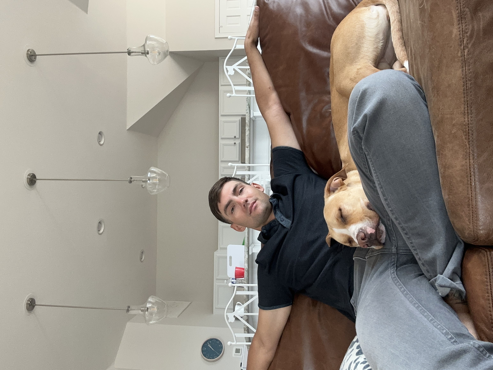

| Nathan Lowrie | |
|---|---|
|  | |
| Born | January 9th, 1999 (age 26) |
| Height | 5'10'' |
| Weight | 175lbs |
| High School | Cocalico High School ('17) Denver, PA |
| College | Purdue Global Penn State (Berks) |
| Degree Plan | B.S. Cybersecurity Analytics and Operations |
Nathan Lowrie (born January 9th, 1999) is currently a rising senior at The Pennsylvania State University , Berks satellite campus. He is currently pursuing a Bachelor's in Cybersecurity Analytics and Operations. Nathan is 26 years old and left the United States Army in 2023 to pursue education. He has a lovely doggo named Savannah, that he acquired through Craigslist in Savannah, GA (hence the name). Nathan loves the Philadelphia Eagles and spending his time outdoors.
Although Nathans's education is currently on track at Penn State (Berks), that is not the only place that Nathan has gone to school. Before the idea of ever attending college Nathan attended and graduated from the Cocalico School district, A.K.A Cocalico High School , which is not far from Penn State Berks Instead of going a traditional college route, Nathan enrolled in the Army (will be talked about below). While in the Army, he would use education benefits paid for by the government to earn an Associate of Applied Science in Information Technology from Purdue University (Global) . This was not an easy feat due to the demands of his job in the Army, but looking back I bet he wished he would have gotten more.
At Penn State, Nathan was only able to transfer over 61 out of an earned 90 credits from Purdue Global. This meant that Nathan was not eligible for University Park and not every class transferred as it is with a lot of school transfers. He is at least learning a lot of new material and making important connections with peers in his field.
In 2017, Nathan enlisted in the United States Army Military Police Corps, where he attended one-station unit training located in Fort Leonard Wood, Missouri. Upon completion from OSUT, Nathan was assigned to the 984th Military Police Company located in Fort Carson, Colorado. In 2018 Nathan deployed the Camp As Sayliyah, Qatar where he served as a member of the port escort team which was responsible for the security of transporting millions of dollars of military equipment throughout the ports of Qatar alongside host nation QMP. In 2021 Nathan was permanently assigned to the 188th Military police company located at Camp Walker, Daegu, South Korea where he served as a Team Leader and Squad Leader during his 1 year station. In 2022, Nathan was assigned to the 546th Military Police Company located in Fort Stewart, Georgia where he finished his active duty career as a Squad Leader and Patrol supervisor overseeing the installations Law enforcement patrols. In 2023, Nathan was released from active duty after serving 6 years of duty.
Upon release from active duty, Nathan was transferred into the United States Army reserves where he currently serves as a Platoon Sergeant for the 203rd Military Intelligence Battalion. He is Air Assault qualified, Special Reactions team qualified, and holds many awards and decorations